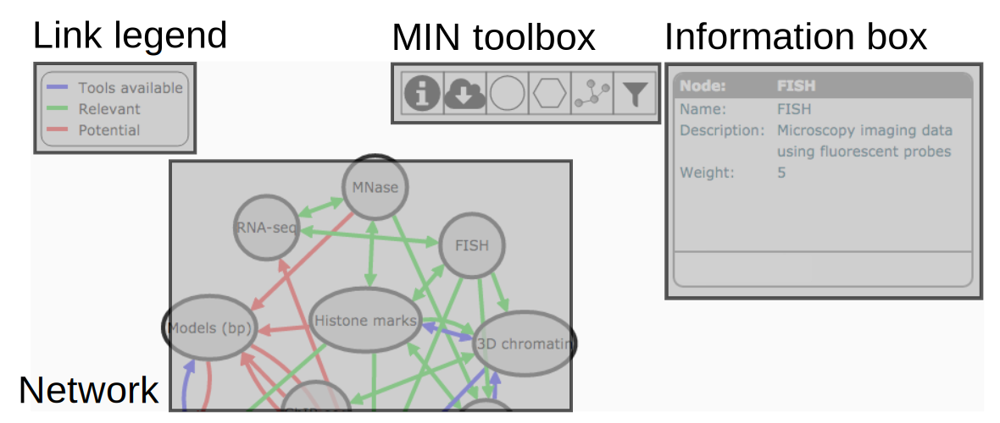

Filter links
The MuG Information Network
Welcome to the MuG Information Network (MIN), a tool to visualise the flow of information within the Multiscale Complex Genomics consortium. This is a short help about how to use the MIN (please scroll down); click on this box to close it. You can find more information about the MIN here.
The Network: Nodes and links
The MIN shows nodes (grey ellipses) and links (arrows connecting nodes). Each node in the MIN is a type of data that is relevant for research in Multiscale Complex Genomics. Each link in the MIN is a scientific connection between nodes, which is a fairly loose concept that can represent a variety of things. By clicking on nodes and links, further information will appear in the Information box on the right hand side of the page. Drag nodes to move them around in the page: other nodes will react to keep the network compact; shift-click nodes to fix/unfix their position in the page.
Links are categorised according to the type of information flow they convey (one arrow for inform, two arrows for connect), and to how established the connection they describe is (blue when there are tools available in the MuG VRE, green when the connection has been shown to be relevant in the literature and finally red when the connection is of potential interest for Multiscale Complex Genomics research).
Editing the network
In the lower part of the Information box, a toolbox is available to modify the information in the network. The following actions are available (the final two are only available while editing):
- New node / link
- Edit selected node / link
- Delete selected node / link
- Create new link from selected node
- Cancel editing
- Save edited information
The MIN toolbox
At the centre of the page there is a a collection of tools available to perform various actions:
- Show/hide this help
- Download the network in JSON format
- Arrange nodes in a circle
- Activate the hexagonal view
 Unfix all nodes
Unfix all nodes- Filter nodes (press to show filtering options)